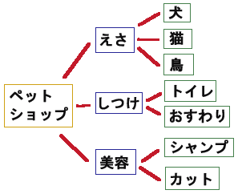
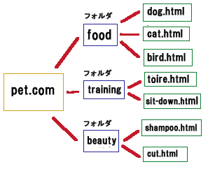

個別ページのファイル名の付け方
個別ページを作成する際、URLとなるファイル名にはそのページの関連キーワードを盛り込みながら作成することをおすすめします。
例えば、ペットショップを運営する場合を例にしますと、「えさ」については犬用、猫用などの商品があると思います。あるいは出張で「しつけ」のサービスなどもやっているかもしれません。

このような内容の場合、以下のようなファイル名にするとわかりやすくなります。

まずは、ペットショップに関連するドメインを取得し、そこにフォルダ分けをし、さらにそれぞれの個別ページの内容に関連したファイル名を付けてhtmlファイルを作成します。このファイル名が長くなる際にはハイフン（-）で区切るとよいでしょう。
上記のように作成した場合、最終的には次のようなURLになります。
さらに、犬用のえさの個別ページ内では、骨やドッグフードなどの各商品を並べるなどしてコンテンツを作成していきます。
上記のURLは、いわゆる「permalink（パーマリンク）」や「permanent link（パーマネントリンク）」と呼ばれるものになり、今後、その個別ページを永続的に識別するためのURLになります。
当サイト内では、ファイル名を「domain.html」とすべきところ、「domein.html」とスペルを間違えて付けてしまったページがあるのですが、ファイル名を変更してしまうと他サイトからのリンクがリンク切れになってしまうため、10年以上変更できずに放置しているページがあります。
パーマリンクとなる個別ファイル名は、一度付けると安易には変更できなくなってしまうため、スペルミスなどに注意して付けるようにしましょう。
ファイル名にキーワードを入れるSEO対策上の利点
上記のように、ドメイン名や個別ファイル名に関連するキーワードを盛り込むことで、SEO対策上、検索エンジンと相性のよいサイトを作ることができます。
また、他サイトから参照される際などは、サイトのURLでそのままリンクされることも多いため、アドレス自体にキーワードを埋め込んでおくことにより、それがそのままアンカーテキストで使用されるという利点もあります。
上記の例でいいますと、「http://www.pet.com/food/dog.html」などのアンカーテキストでリンクされるケースが自然と多くなり、このリンクには「pet food dog」などの文字列が入っているため、そのページが検索エンジンに「犬用のペットフード」について書かれたページと認識されやすくなります。
結果として「ペットフード 犬」などで検索された際に上位表示されやすくなり、アクセスアップにつながる可能性が高くなります。そのため、個別ページを作成する際は、01.htmlなどの適当なファイル名ではなく、検索キーワードを意識した文字列で作成するとよいでしょう。
ちなみに、各フォルダ内のページ数についてですが、フォルダ分けをしたものの、そのなかに入っているページ数が少ない場合にはかえって逆効果になるため、ある程度ボリューム感を出すことをおすすめします。
フォルダのなかに１ページしか入ってないという状態はあまりよくないので、ページ数が少ない場合は無理にフォルダ分けをせず、すべてをルートディレクトリに入れてもかまわないでしょう。
上記の例でいえば、フォルダ分けしない場合はこのような形になります。
当サイト運営者の印象では、フォルダ分けした深い階層にあるページよりも、ルートディレクトリにあるページの方が検索でヒットしやすい印象があります。数ページ程度しかないサイトの場合、すべてルートディレクトリを使って作成することをおすすめします。
■「日本語音読み」と「英語表記」でのファイル名の違い
このファイル名の付け方については、例えば、犬のページでいうと日本語を音読みした「inu.html」や英語表記での「dog.html」などの付け方がありますが、個人的な印象では英語での「dog.html」などにした方がよい気がいたします。
例えば、政府系ドメインのgo.jpなどは「government」のgoの意味ですし、他にも、「academy」のac.jpや「commercial（商用）」のco.jpなど、ドメイン自体がもともと英語表記のため、日本語を音読みした「inu」よりも英語そのままで「dog」などとした方が自然なはずです。
大手サイトなどをのぞいてみましても、「ヤフー不動産」は「fudousan」ではなく、「realestate」となっておりますし、できるだけ英語表記にてファイル名を付けた方がぶなんといえるでしょう。